First load the required packages and data. Note:, from the univariate analyses the analysis data set for the lab parameters has been updated to include transformed variables. Therefore, we load the second iteration of the data data/IDA/ADLB_02.rds.
F.1 V1: Association with structural variables
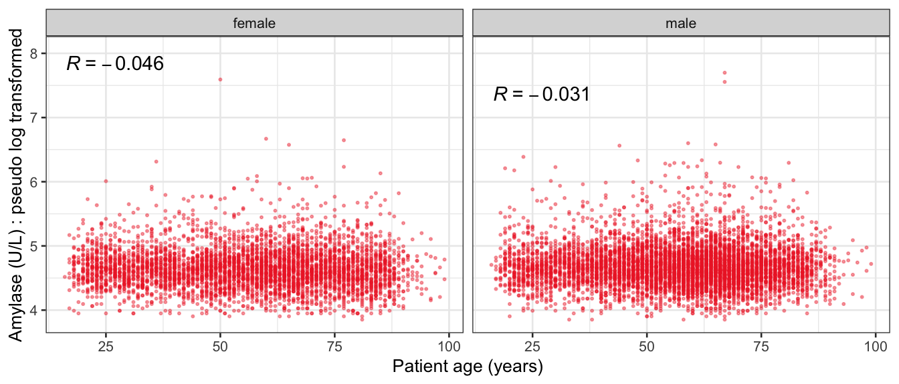
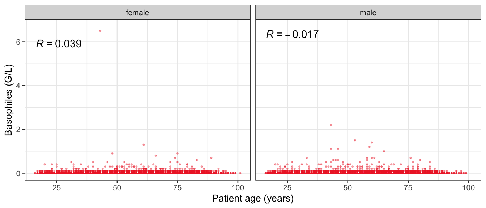
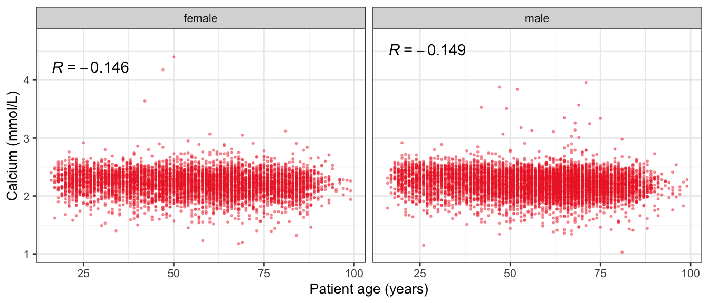
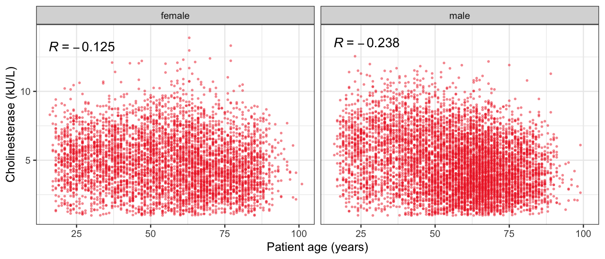
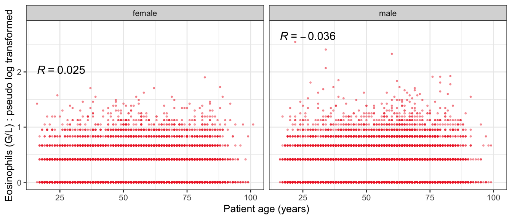
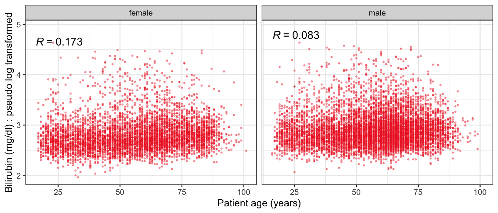
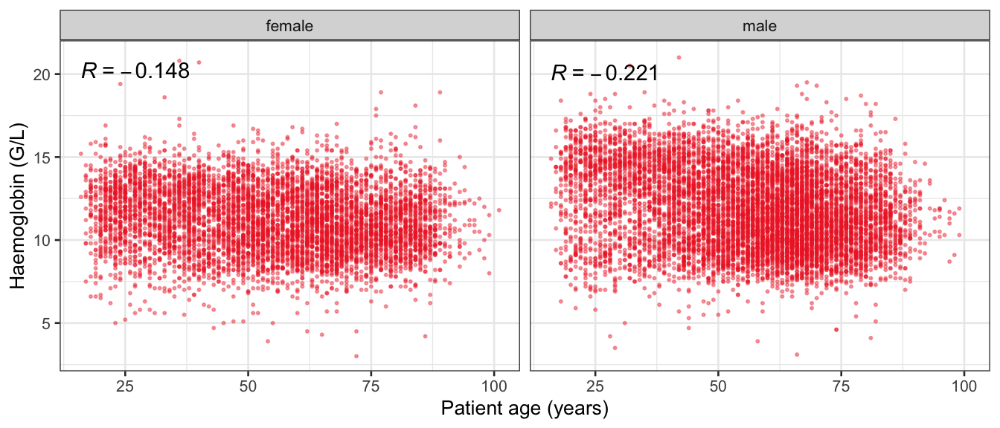
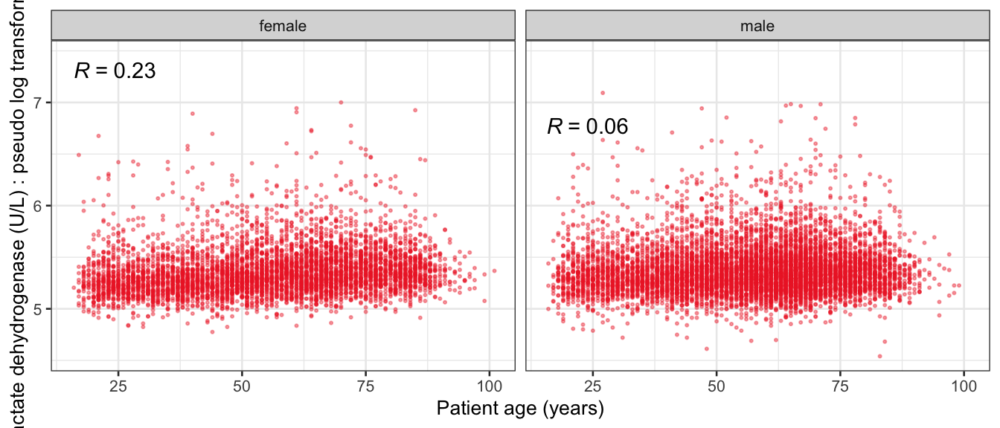
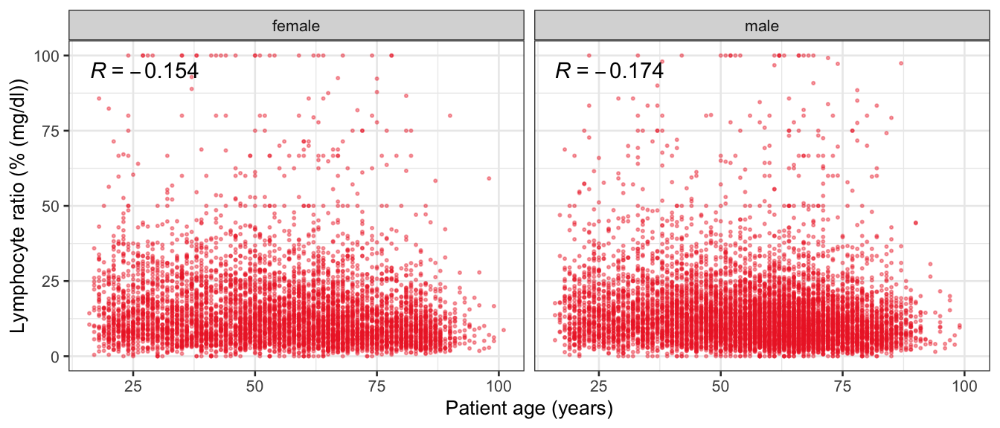
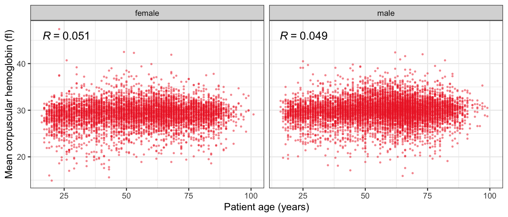
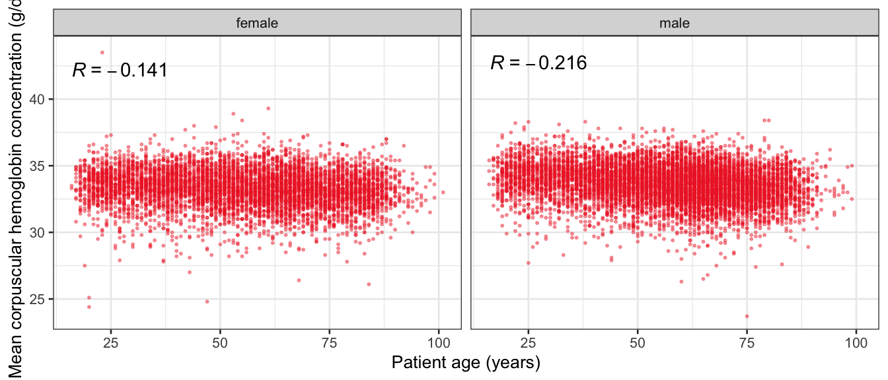
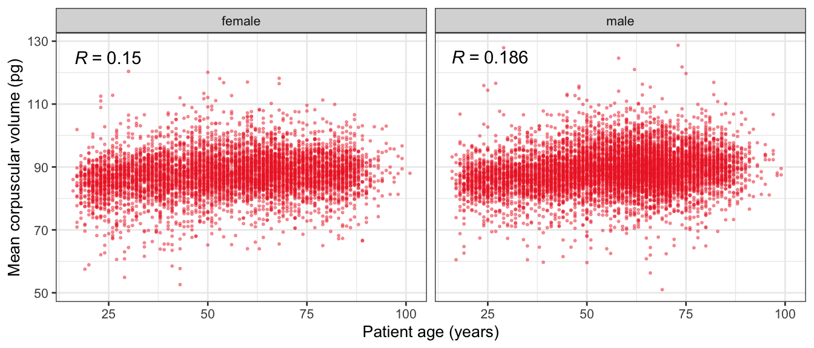
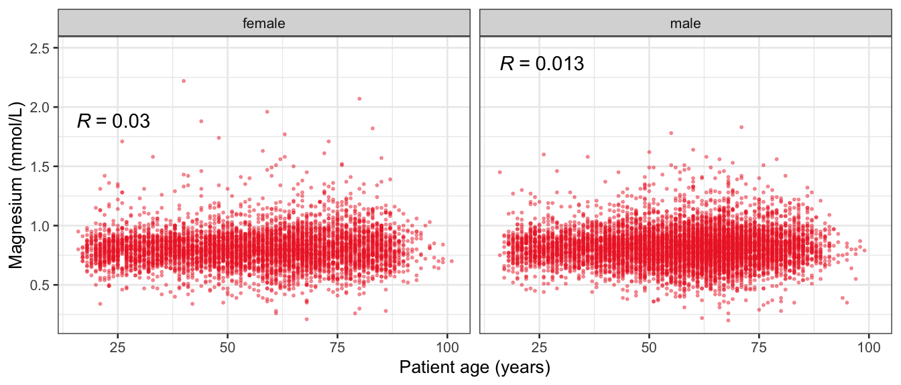
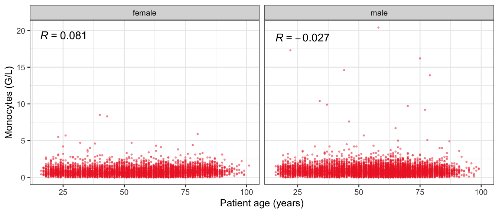
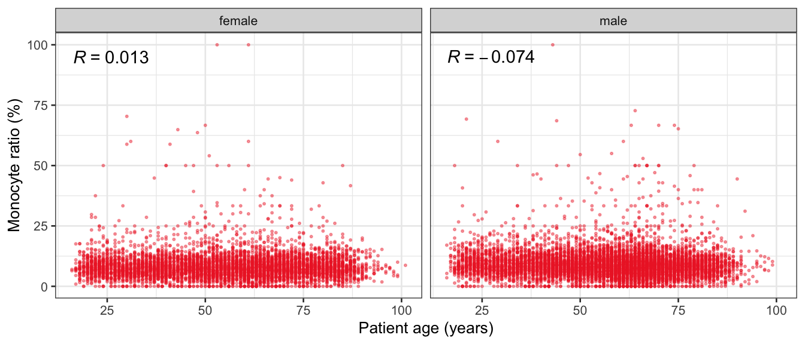
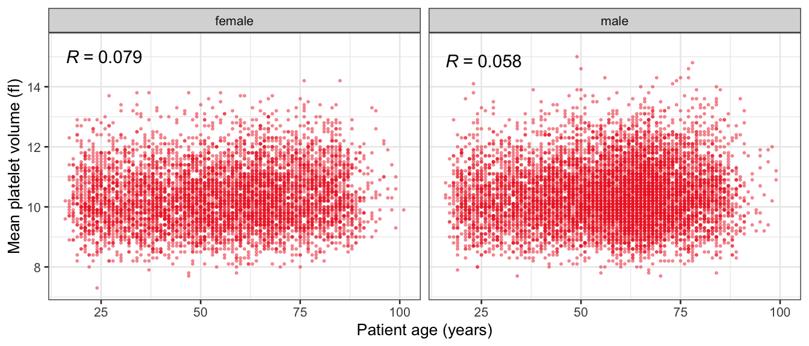
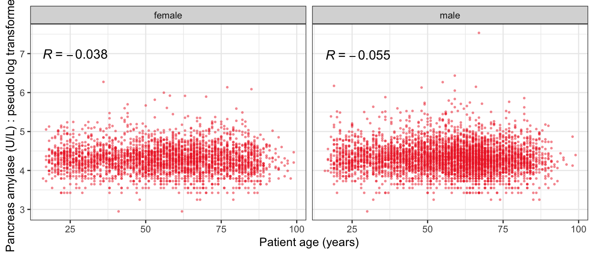
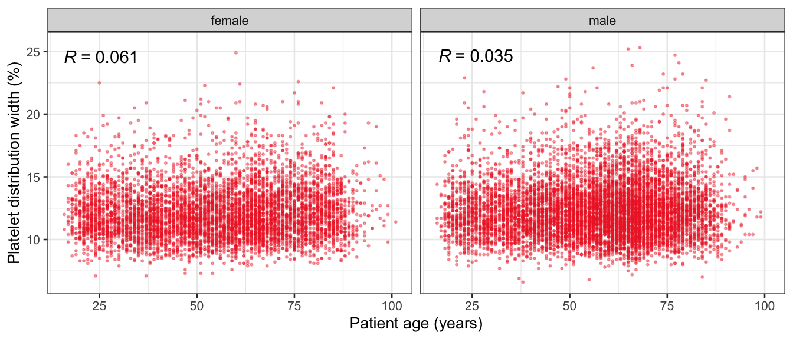
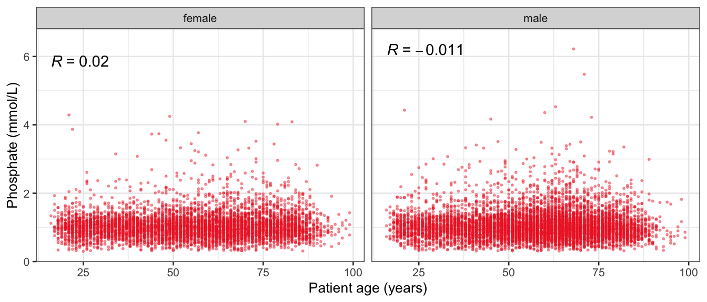
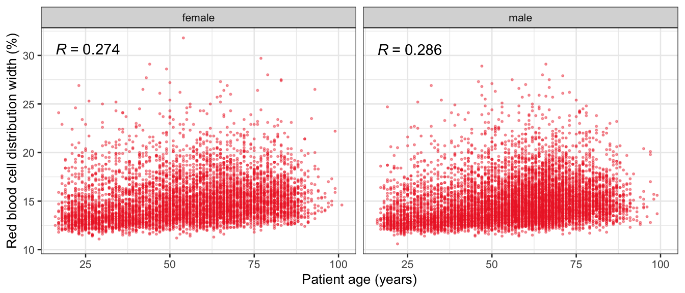
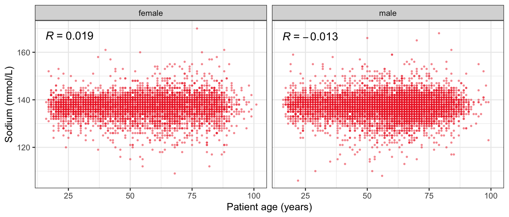
F.2 VE3: Redundancy
F.2.1 Linear model
VIF for the all predictor model.
The available sample size is 3979 (0.42 %).
Parameter code
Variance inflation factor
Multiple R-squared
SEX
1.3
0.25
MCV
129.5
0.99
HGB
254.3
1.00
HCT
249.4
1.00
PLT
1.9
0.48
MCH
179.4
0.99
MCHC
47.5
0.98
RDW
1.9
0.47
MPV
9.2
0.89
MONO
4.3
0.77
BASO
2.6
0.62
NT
1.5
0.32
APTT
1.2
0.18
FIB
2.9
0.66
SODIUM
1.4
0.30
POTASS
1.4
0.29
CA
2.1
0.52
PHOS
1.6
0.36
MG
1.3
0.23
BUN
3.2
0.69
HS
1.8
0.43
TP
4.5
0.78
ALB
6.3
0.84
CHE
2.8
0.65
GLU
1.3
0.20
TRIG
1.4
0.29
CHOL
1.9
0.47
CRP
2.8
0.65
EOSR
47.3
0.98
LYMR
1,321.2
1.00
MONOR
321.4
1.00
NEU
8.9
0.89
NEUR
2,179.1
1.00
PDW
9.1
0.89
RBC
40.1
0.98
AGE
1.5
0.31
ALAT_T
3.9
0.74
AMY_T
2.7
0.63
AP_T
2.3
0.57
ASAT_T
6.6
0.85
CK_T
2.2
0.55
CREA_T
2.9
0.65
EOS_T
3.5
0.71
GBIL_T
1.6
0.38
GGT_T
2.6
0.62
LDH_T
2.2
0.55
LIP_T
2.2
0.54
LYM_T
4.5
0.78
PAMY_T
3.4
0.71
WBC_T
15.7
0.94
Source Code
# Multivariate analyses {#sec-multivar-appendix}First load the required packages and data. Note:, from the univariate analyses the analysis data set for the lab parameters has been updated to include transformed variables. Therefore, we load the second iteration of the data `data/IDA/ADLB_02.rds`. ```{r, echo = FALSE, message = FALSE, warning = FALSE }library(tidyr)library(dplyr)library(ggplot2)library(purrr)library(tidyselect)library(corrr) ## tidy correlationlibrary(patchwork)library(ggpubr)library(ggrepel)library(here)library(dendextend)library(gt)library(gtExtras)## for network plotoptions(ggrepel.max.overlaps =100)source(here("R", "fun_compare_dist_plot.R"))source(here("R", "fun_compare_mult_dists.R"))source(here("R", "fun_ida_trans.R"))## Load the datasets - make sure to load the correct ADLB2 ## TODO: have a make workflow to ensure dependencies run in correct orderADSL <-readRDS(here::here("data","IDA", "ADSL_01.rds"))ADLB <-readRDS(here::here("data","IDA", "ADLB_02.rds"))```## V1: Association with structural variables {#sec-V1-appendix}```{r mvi01a, message=FALSE, warning=FALSE, echo=FALSE, fig.height=3}#| layout-ncol: 3 ## Join with ADSL for structural variables ADSL01 <- ADSL |>select(USUBJID, AGEGR01C, AGE, SEXC, SEX) dat <- ADLB |>left_join(ADSL01, by ="USUBJID")remain_predictors <- dat |>filter( REM_PRED_FL02 =="Y") |>group_by(PARAMCD) |>group_map(~plot_assoc_by(.x), .keep =TRUE)for (plts in remain_predictors) {print(plts)}```## VE3: Redundancy {#sec-VE3-appendix}### Linear modelVIF for the all predictor model. ```{r vif_app, message=FALSE, warning=FALSE, echo=FALSE, fig.height=3}## Join with ADSL for structural variables ADSL01 <- ADSL |>select(USUBJID, AGEGR01C, AGE, SEXC, SEX) dat <- ADLB |>left_join(ADSL01, by ="USUBJID")dat_wide <- dat |>filter(KEY_PRED_FL02 =="Y"| MED_PRED_FL02 =="Y"| REM_PRED_FL02 =="Y") |>select(USUBJID, PARAMCD, AVAL, SEX) |>pivot_wider(names_from = PARAMCD, values_from = AVAL, values_fill =NA) dat_vif <- dat_wide |>select(-USUBJID)formula <-as.formula(paste(c("~",paste(names(dat_vif), collapse="+")), collapse=""))#formulared <- Hmisc::redun(formula, data = dat_vif, nk=0, pr=FALSE)vif <-1/(1-red$rsq1)#cat("\nAvailable samvple size:\n", red$n, " (", #round(100*red$n/nrow(dat),2), "%)\n")vif_df <-as_tibble(vif, rownames ="PARAMCD") |>rename(vif = value)red_df <-as_tibble(red$rsq1, rownames ="PARAMCD") |>rename(r2 = value)tab_df <- vif_df |>left_join(red_df, by ="PARAMCD")```The available sample size is `r red$n` (`r round(100*red$n/nrow(dat),2)` %).```{r vif_app02, message=FALSE, warning=FALSE, echo=FALSE, fig.height=3}#vif_df |> gt::gt(caption = "Variance inflation factors")#red_df |> gt::gt(caption = "Multiple R-squared")tab_df |>gt() |> gt::cols_label(PARAMCD ="Parameter code",r2 ="Multiple R-squared",vif ="Variance inflation factor" ) |>fmt_number(columns =c(r2),decimals =2 ) |>fmt_number(columns =c(vif),decimals =1 ) |>gt_theme_538()```